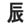

KANJIDAMAGE
Intro
Kanji facts
How to
Tags
Kanji
Radicals
Appendix
Onyomi
Ill pairs
Dupes
Articles
Long short vowlels
Synonyms
Forum
|
← Previous
Number 732
Next →
cliff
(upper left radical)
PK
Because it looks like a cliff, dummy.
Used In
励
歴
灰
産
原
厚
圧
備
反
派
岸
炭
顔
盾
厄
成
涯

厳
脈
 KANJIDAMAGE
KANJIDAMAGE
 Number
732
Number
732